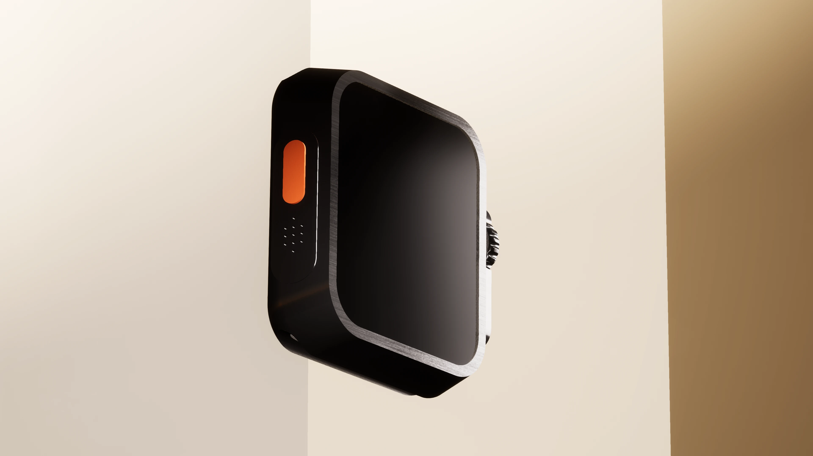
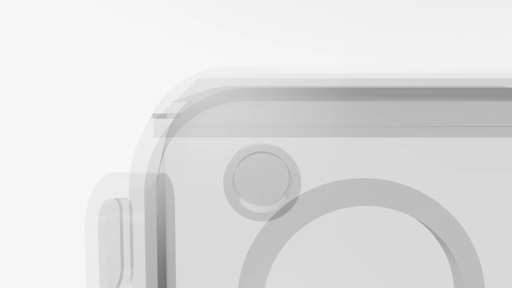
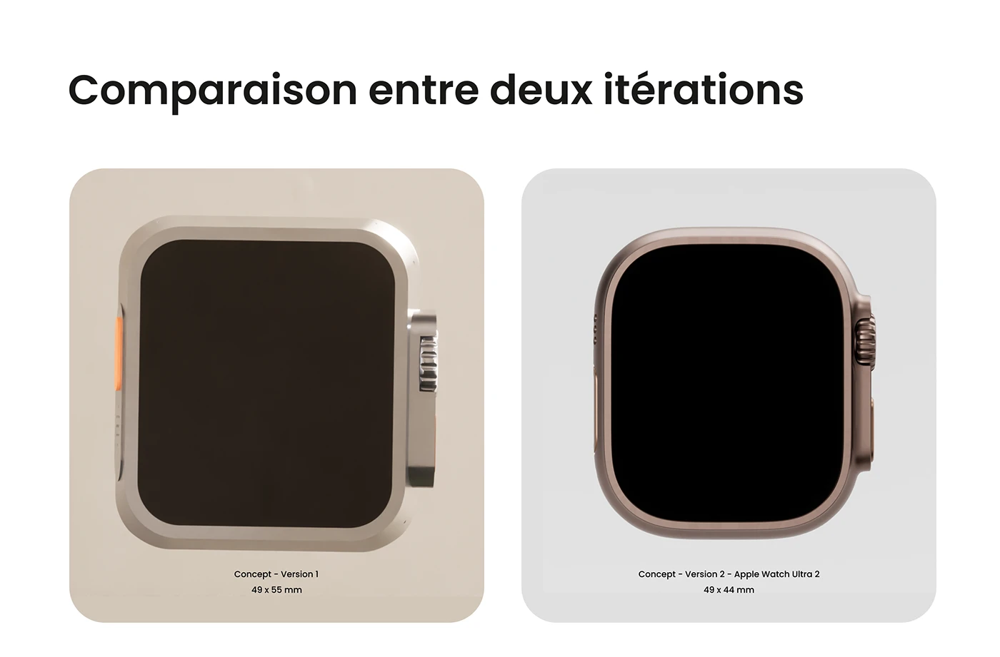
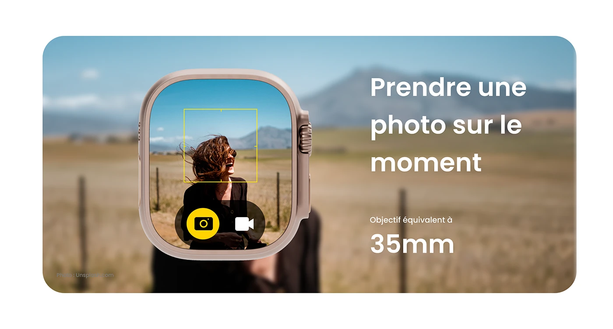
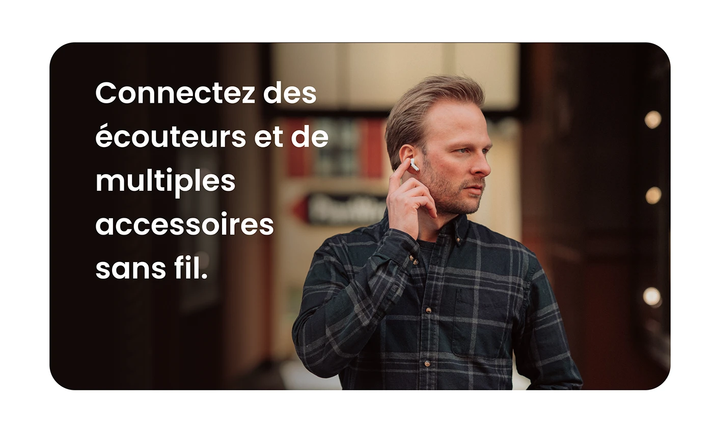

Et si une montre pouvait faire l’essentiel de ce qu’on demande aujourd’hui au smartphone ? J’ai passé cinq semaines sur cette question. C’est un concept prospectif, pas un produit Apple : je suis parti de l’Apple Watch pour dessiner deux versions d’un appareil compact, en travaillant la forme de l’objet et ses fonctions en même temps.
Repenser la place du smartphone
Tout part du temps que l’on passe sur nos écrans, souvent sans l’avoir vraiment choisi. Je voulais un appareil qui rende service sans retenir l’attention : on communique, on se repère, on prend une photo, puis on revient à ce qu’on faisait.
Je l’ai pensé pour des personnes actives qui veulent rester joignables et organiser leur journée, tout en s’accordant des pauses. La liste des usages est volontairement courte : appels et messages, musique, traduction, dictaphone, calcul et suivi des activités sportives. Ce qui pousse à rester sur l’écran n’avait pas sa place.
Une première version plus grande
Pour le boîtier et les commandes, l’Apple Watch a été ma référence principale. La première version en reprend les codes dans un format de 49 × 55 mm. Plus grand, l’écran se lit mieux et la batterie gagne de la place. C’est le minimum si l’on demande à une montre de faire le travail d’un téléphone.
J’ai travaillé le volume, la couronne de navigation et les boutons d’action en rendus 3D. Les vues en transparence m’ont servi à vérifier comment les composants pouvaient s’organiser à l’intérieur.
Faire évoluer le boîtier

La première proposition
Un boîtier aux lignes plus anguleuses, avec des commandes physiques sur les côtés.

Explorer la construction
Une vue de travail pour étudier la forme de l’objet et l’intégration des composants.

Les commandes physiques
La couronne et le bouton d’action évitent de tout faire au doigt sur un petit écran.

Deux versions, deux proportions
La seconde version revient à un format de 49 × 44 mm, avec des angles plus arrondis.
Une seconde version pour remplacer le smartphone
Avec la seconde version, je me suis rapproché du format de l’Apple Watch Ultra 2 et j’ai poussé l’idée au-delà du poignet. Un appareil photo prend place au dos, à côté des capteurs. On détache le boîtier de son bracelet pour photographier ou filmer.
Pour la couleur, j’ai choisi un rose sable proche de la peau. Je voulais un objet discret, qui se fait oublier quand on ne s’en sert pas. Les mises en situation montrent les usages visés : photo, orientation, suivi du niveau sonore et connexion à des accessoires sans fil.
Les usages envisagés

Photographier sur le moment
Le concept prévoit un objectif équivalent à 35 mm et une interface pour passer de la photo à la vidéo.

Se repérer et suivre son environnement
Carte, boussole et mesure du niveau sonore : des fonctions simples, utiles plusieurs fois par jour.

Connecter ses accessoires
La proposition prévoit l’utilisation d’écouteurs et d’autres accessoires sans fil.

Utiliser l’objet hors du poignet
Le boîtier détaché de son bracelet ouvre la possibilité d’autres prises en main, notamment pour photographier.
Ce que j’en retiens
Ce projet m’a obligé à tenir deux échelles à la fois : une réflexion sur notre rapport au smartphone et le dessin d’un objet au millimètre près. Chaque fonction ajoutée se paie en taille, en batterie ou en complexité. C’est là que se jouent les vrais arbitrages, et c’est pour ça que j’ai gardé les repères de navigation de l’Apple Watch plutôt que d’en inventer de nouveaux.
Ce sont des rendus, pas un prototype fonctionnel. La suite logique serait de tester l’autonomie, l’intégration des composants et le confort de prise en main, puis de vérifier si l’objet réduit vraiment le temps passé sur l’écran.